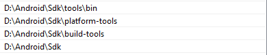
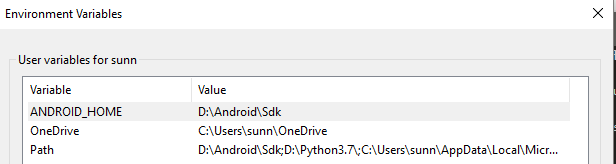
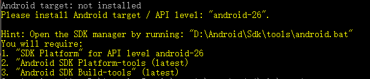
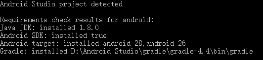
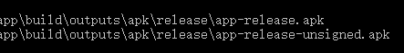

默认会使用Vue,和Vue各种工具
- 安装npm, java sdk, android studio
- npm install -g cordova
- cordova create helloworld 创建工程
- cd helloworld
- cordova platform add android - -save 添加安卓平台
- cordova requirements 检查开发条件,这里就会出很多问题
6.1 第一次运行打开android studio 根据提示选择android skd安装目录
6.2 添加环境变量值D:\Android\Sdk\build-tools和D:\Android\Sdk\platform-tools到Path变量

6.3 新建环境变量ANDROID_HOME，添加变量值D:\Android\Sdk

6.4 重启一下电脑,一定要重启，不然一直找不到ANDROID_HOME
6.5 jdk检测过了，提示下面的

打开android studio > Tools > SDK > manager > System Setting > Android SDK
安装对应的API level
6.6 在运行 cordova requirements,就能过了

cordova build android 生成apk,直接在模拟器上做可以跳过这个，run的时候会一起编译
cordova run android 运行apk,usb连接手机就运行到手机上，没有就运行到模拟器，
8.1 打开android studio 手机模拟器 Tools > AVD manager > Actions > run
8.2 再运行 cordova run android 模拟器就能看到结果
模拟器没反应，操作一下手机，再不行就在浏览器上看，运行 cordova serve android
在cordova项目中直接运行 vue inti webpack MyApp,生成vue项目
修改vue项目下的 config/index.js, build下的这3项
1 | build: { |
11. cd MyApp 在vue项目根目录执行 npm run build
12. cd .. 回到cordova项目根目录，执行 cordova run android。就能看到vue的项目
13. APK签名，才能安装到手机上
keytool -genkey -v -keystore D:\mytest.keystore -alias mytest -keyalg RSA -validity 20000
生成签名，根据提示输入，最后确认信息按y，记得直接输入的密码，后面要用到.
13.1 先生成没有签名的debug版本apk，再加上签名
cordova build android –release
生成一个没签名的app-release-unsigned.apk，把数字签名放到apk目录下,执行 jarsigner -verbose -sigalg SHA1withRSA -digestalg SHA1 -keystore mytest.keystore app-release-unsigned.apk mytest
13.2 直接生成带签名的apk
cordova build android –release –keystore=”mytest.keystore” –alias=mytest –storePassword=testing –password=testing1
keystore 后面是数字签名证书， –alias 后面是别名 storePassword 后面是密钥库口令 password 后面是密钥口令
注意：命令中口令要替换成自己的，就是生成签名是需要记住的那两个口令
13.3 用文件配置cordova build -release
在cordova根目录新建build.json，写入
1 | { |
14. 运行 cordova build -release
生成
